Полный цикл разработки в 1С силами ИИ-агента
Пример: учёт драгоценных металлов в ломе электроники для «Управления торговлей» 11.5. ИИ-агент получил техническое задание из 14 пунктов и выполнил его целиком: изучил типовую конфигурацию, создал метаданные, формы и код по её образцу, завёл тестовые данные, проверил работу модульными тестами и сценариями в работающей программе, сам разобрал снимки экрана, исправил найденное и сверил цифры отчётов с данными базы. Человек в работу не вмешивался.
Подробные цифры — время по видам работ и частям задания, объём кода, оценка трудоёмкости для программиста — на странице статистики прогона.
Видео
Прогон задания «Учёт драгметаллов в ломе»: агент, MCP:RSV Server и MCP:RSV Data Pro.
Задание
Компания принимает лом электроники — платы, разъёмы, контакты, катализаторы. В нём содержатся золото, серебро, платина и палладий. Платят сдатчику за чистый вес лома, а ценность партии определяется граммами драгоценного металла и его котировкой на дату приёмки. Задание — перенести этот учёт из таблицы приёмщика в программу.
- Конфигурация — «Управление торговлей», редакция 11.5 (демонстрационная база), платформа 8.3.27, среда разработки 1C:EDT 2026.2.
- Вся доработка — в отдельном расширении «УчетДрагметаллов»; конфигурация не меняется и с поддержки не снимается, типовые объекты дорабатываются только заимствованием.
- Доработка должна вести себя как часть типовой конфигурации: формы, проведение, печать, отчёты и сообщения — по образцу типовых объектов.
- Сделанным считается только то, что проверено в запущенной программе: расчёты и проведение — модульными тестами YAxUnit, формы и кнопки — сценариями Vanessa Automation со снимками экрана, числа отчёта — сверкой с прямым запросом к базе.
Полный текст: техническое задание «Учёт драгметаллов в ломе». Оно же лежит в архиве комплекта.
Инструменты
MCP:RSV Server
Плагин для 1C:EDT: изучение конфигурации, создание метаданных и форм, запись кода, проверка кода и проекта, обновление базы, модульные тесты YAxUnit, сценарии и снимки экрана Vanessa Automation в работающей программе, выгрузка файлов поставки.
MCP:RSV Data Pro
Работа с данными живой базы: заведение тестовых данных, запросы, формирование вариантов отчётов в работающей программе. Им агент сверял цифры отчёта и монитора с документами.
Скилл и правила для агента
Скилл «автоматизированная разработка по ТЗ» и правила работы с 1С — из комплекта поставки MCP:RSV Server. Задают порядок: изучить образец, сделать, проверить в программе, и только потом брать следующее.
Модель
Claude Opus 5.5. Ведущий агент работал оркестратором, части задания выполняли агенты-исполнители.
Как шла работа
Ведущий агент сначала поручил двум исполнителям разведку: как в «Управлении торговлей» устроены «Заказ клиента» и «Реализация товаров и услуг» — формы, проведение, печать, отчёты, дополнительные обработки, карточки номенклатуры и партнёра. Затем разбил задание на части и выдавал их исполнителям строго по одной, принимая каждую по отчёту и снимкам экрана.
Каждая часть проходила один и тот же цикл:
- Метаданные и код — объекты расширения, формы, модули, права ролей; код — в стиле типовых, с вызовом готовых общих модулей конфигурации.
- Проверка кода — код-ревью и проверка проекта средой разработки; замечания исправляются или объясняются поимённо.
- Обновление базы — расширение загружается в информационную базу.
- Тестовые данные — металлы, содержание, котировки, документы заводятся программно через MCP:RSV Data Pro.
- Модульные тесты YAxUnit — расчёты и проведение; ожидаемые значения взяты из задания и посчитаны вручную.
- Сценарий Vanessa — программа открывает формы, вводит данные, нажимает кнопки, как пользователь.
- Снимки экрана — агент открывает каждый кадр и проверяет, что на нём видно задуманное: колонки заполнены, кнопки с картинками, ничего не обрезано.
- Исправление найденного — и повтор проверки, пока сценарий не пройдёт целиком.
- Сверка цифр — итоги отчёта и монитора сравниваются с прямым запросом к документам.
| Часть | Пункты ТЗ | Что сделано | Минут |
|---|---|---|---|
| Разведка (две параллельно) | общие требования | образцы типовых документов, печати, отчётов, дополнительных обработок | 10 |
| 1 | 1–4, 6.1, 14 | расширение, справочник металлов, регистры содержания и котировок, команды «Перейти», роли, раздел, данные | 44 |
| 2 | 4–6, 6.1 | документ, перечисление, регистры накопления, расчёты, проведение, контроль, 13 документов данных | 56 |
| 3 | 7, 7.1, 13 | приёмо-сдаточный акт и оценка партии в типовой печати, справка документа | 23 |
| 4 | 8 | отчёт на СКД, два варианта, диаграмма, размещение в «Закупках», сверка с базой | 25 |
| 5 | 9, 12 | внешняя обработка-монитор, фоновый пересчёт, подключение как дополнительной обработки | 36 |
| 6 | 10 | регистр сдатчиков, закладка «Приём лома» в карточке партнёра | 13 |
| 7 | 11, 14, интерфейс | окончательный вид раздела, права, запрет удаления, доводка форм, итоговый сценарий | 33 |
| 7б | 11 | подбор картинки раздела | 7 |
| Ведущий агент | — | план, постановка задач, приёмка частей, итоговый отчёт | 10 |
Почти две трети времени ушло на проверку в работающей программе. Запись метаданных и кода занимает минуты; основное время — подготовка правок моделью и прогоны сценариев.
Что сделано
В расширении — справочник, перечисление, документ, три регистра сведений, два регистра накопления, отчёт с двумя вариантами, раздел программы с тремя группами, две общие команды, своя роль, семь общих модулей (из них три — модульные тесты), два макета печатных форм; заимствованы карточки номенклатуры и партнёра, раздел «Закупки», роль «Полные права» и модули настройки печати и дополнительных обработок. Отдельно — внешняя обработка «Монитор приёмки лома». Все кадры ниже — снимки работающего 1С:Предприятия с данными, которые агент завёл сам; щелчок открывает кадр в полном размере.
Раздел «Драгоценные металлы»
Свой раздел в панели разделов, с картинкой (весы — приём лома взвешиванием) и группами, как у типовых разделов: Учёт — документы приёмки; Справочники и настройки — котировки, содержание металлов, справочник металлов, в порядке частоты использования; Отчёты — отчёт по драгоценным металлам; Сервис — «Дополнительные обработки» раздела и команда администратора «Подключить монитор приёмки лома». Документ и отчёт доступны и из раздела «Закупки».
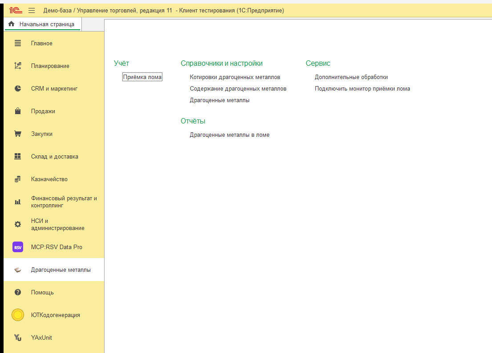
Справочник «Драгоценные металлы» и котировки
У металла — наименование, краткий код (AU, AG, PT, PD), комментарий и цветной значок, который потом повторяется в документе, в списке содержания и в мониторе. Котировки — периодический регистр сведений: цена грамма на дату с историей. В карточке металла на панели навигации — команда «Котировки драгоценных металлов»: открывает котировки только этого металла (проверено на двух металлах).
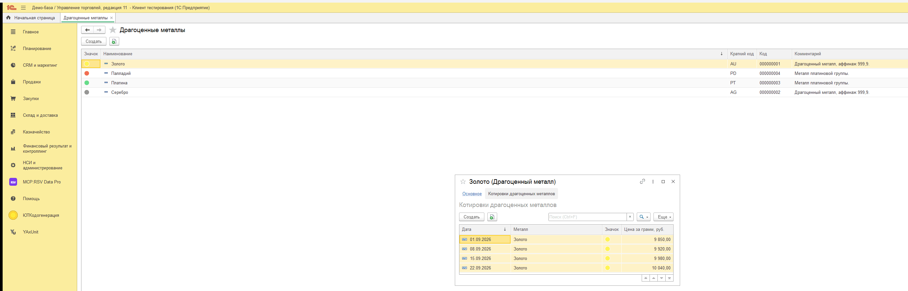
Содержание металлов в номенклатуре
Регистр сведений без истории: сколько граммов каждого металла в килограмме вида лома. Заполнен ровно по таблице задания — восемь строк, у каждой значок своего металла.
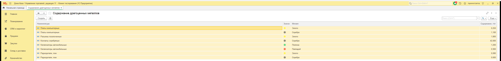
Список открывается и прямо из карточки номенклатуры: типовая карточка заимствована, в меню «Перейти» и на панели навигации появилась команда «Содержание драгоценных металлов». По ней видны строки только этой позиции; у позиции без содержания список открывается пустым, без ошибки.
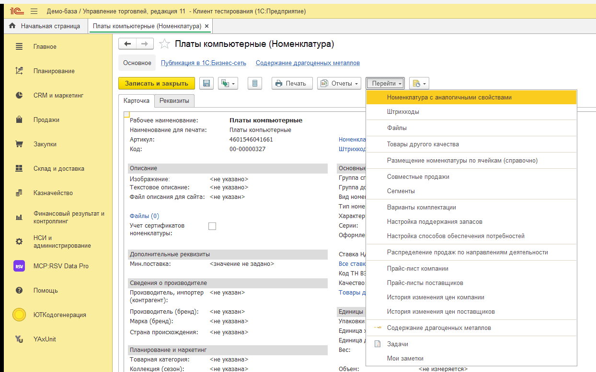
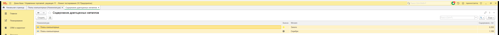
Документ «Приёмка лома»
Форма документа сделана по образцу «Заказа клиента» и «Реализации товаров и услуг»: реквизиты шапки — на закладке «Основное», каждая табличная часть — на своей закладке, у закладок и кнопок картинки. На командной панели — «Провести и закрыть» с надписью, «Записать», «Провести» и «Пометить на удаление» картинками, меню «Печать» и «Отчёты», знак вопроса справки. Вид приёмки — перечисление из четырёх значений, у нового документа «Заготовка».
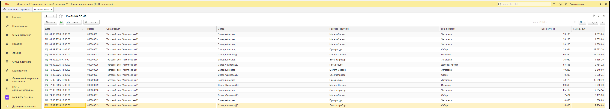
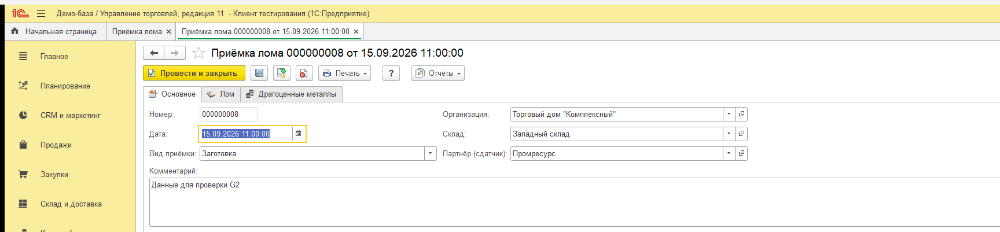
Вес нетто = (брутто − мусор) × (1 − засор / 100), лишние знаки после третьего отбрасываются; сумма = нетто × цена за кг. Пересчёт — сразу при изменении любого исходного значения, итоги — в подвале таблицы.
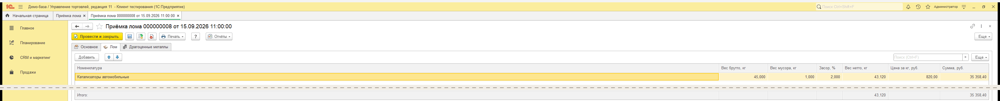
Кнопка «Рассчитать металлы» заполняет вторую табличную часть: по каждому металлу — граммы (сумма по строкам лома, вес нетто × содержание), котировка, действующая на дату документа, и стоимость.
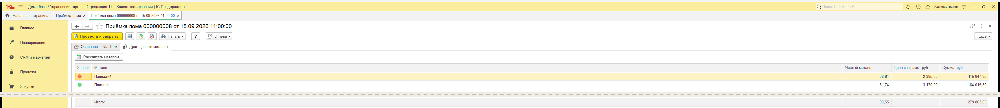
Проведение, контроль и движения
Проведение написано в порядке и стиле типовых документов: контроль, управляемая блокировка, движения. Документ накапливает остатки по двум регистрам: лом на складах (вес нетто и сумма по виду лома) и драгоценные металлы на складах (граммы и сумма по металлу). Отмена проведения снимает движения.
Если у строки лома не задано содержание металлов, документ не проводится: в сообщении — номер строки и название позиции, а щелчок по сообщению переводит курсор на нужную строку таблицы «Лом».
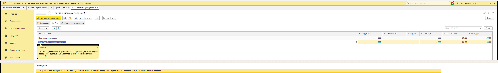
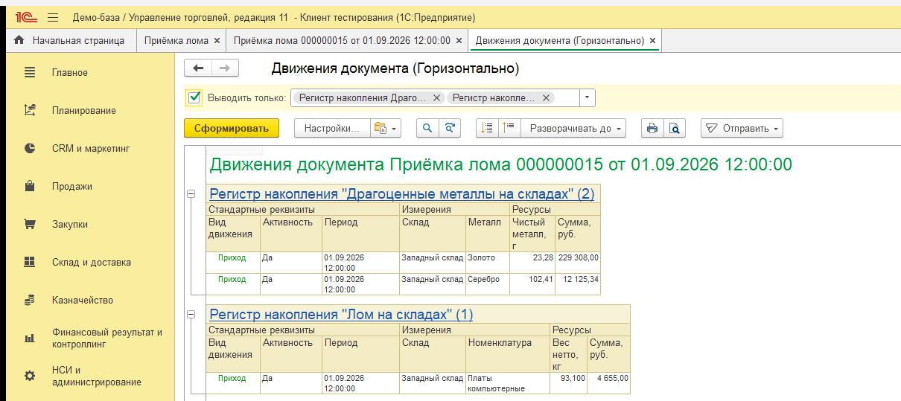
Печатные формы: приёмо-сдаточный акт и оценка партии
Обе формы встроены в типовой механизм печати: та же кнопка «Печать» в документе и в списке, тот же предварительный просмотр, сохранение и отправка по почте, что у типовых документов. Акт — документ для сдатчика: реквизиты организации и сдатчика, таблица лома с итогом, сумма к выплате цифрами и прописью, подписи; драгоценных металлов в нём нет. Оценка партии — для внутреннего пользования: металлы по котировкам, выплачено сдатчику, ориентировочная выгода.
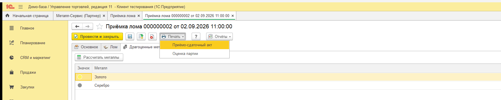
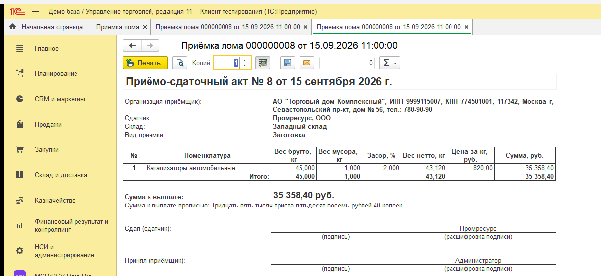
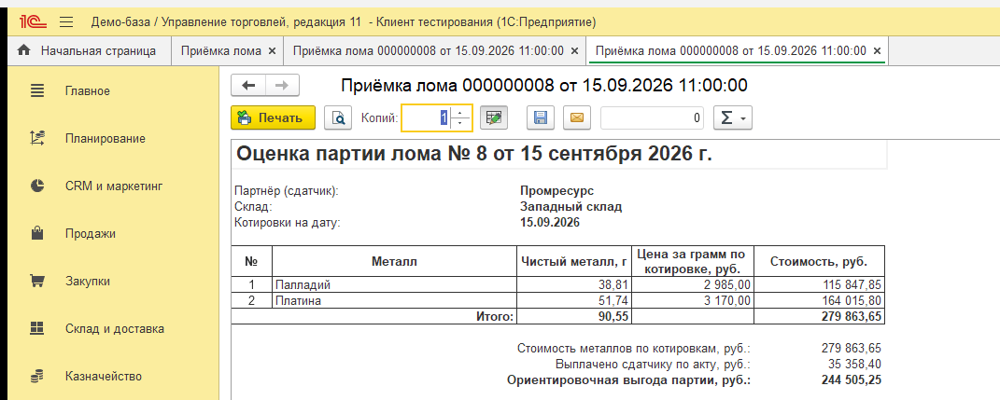
Непроведённый документ не печатается: программа предлагает его сначала провести — так же, как у типовых документов.
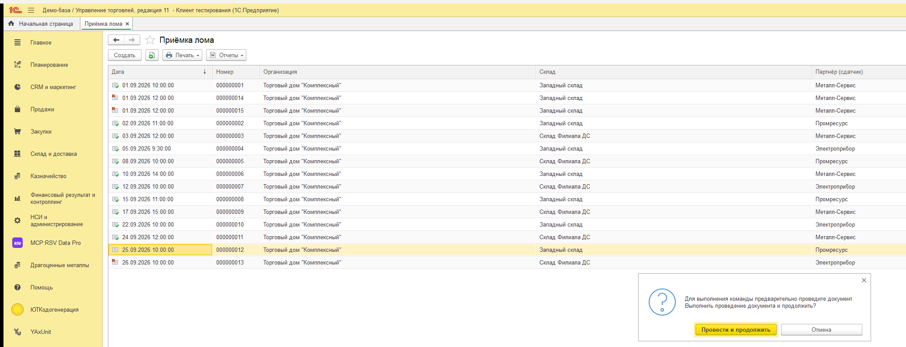
Справка документа
По знаку вопроса открывается своя справка документа: что это за документ, что заполняет пользователь, что считается автоматически, откуда берутся металлы и их стоимость, почему документ может не провестись, какие есть печатные формы и какие данные накапливаются.
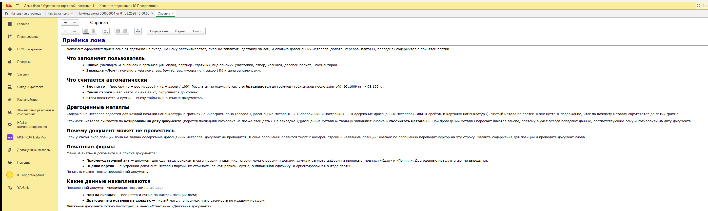
Отчёт «Драгоценные металлы в ломе» на СКД
Отчёт на схеме компоновки данных, период и склад — в шапке отчёта. Два варианта с понятными названиями, которые видны на закладке и в окне выбора вариантов.
«Драгоценные металлы по складам» — по каждому металлу с разбивкой по складам: граммы на начало периода, поступило, на конец и оценка по котировкам. Общие заголовки колонок «Содержится металла, г» и «Оценка по котировкам, руб.» над тремя колонками периода; итоги по металлам и общий итог; под таблицей — круговая диаграмма долей металлов в стоимости.
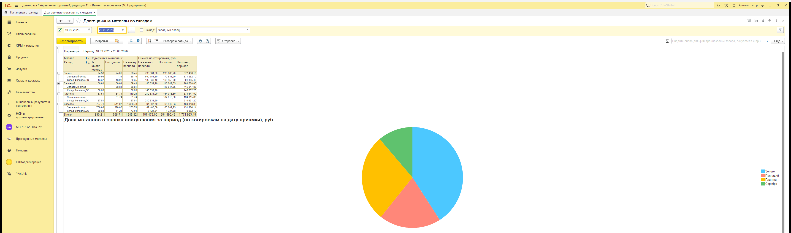
«Лом на складах» — по каждому виду лома и складу: вес нетто на начало, поступило, на конец (кг) и сумма, выплаченная сдатчикам. Вес лома и граммы металла в одной таблице не смешиваются.
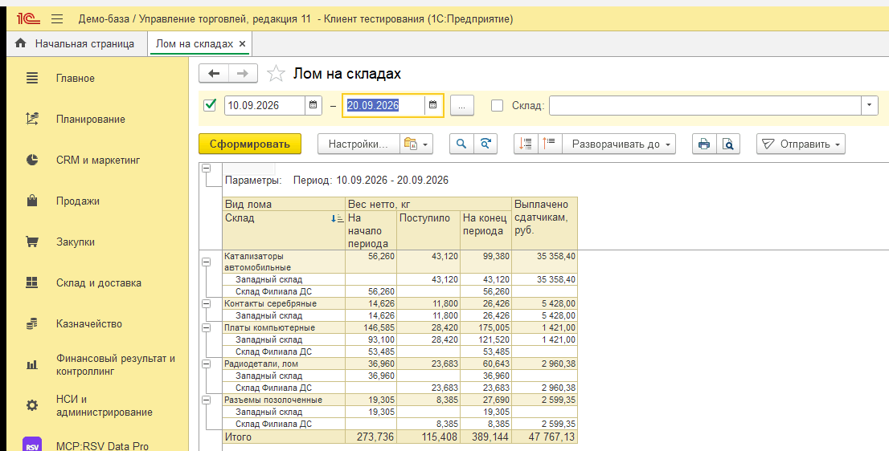
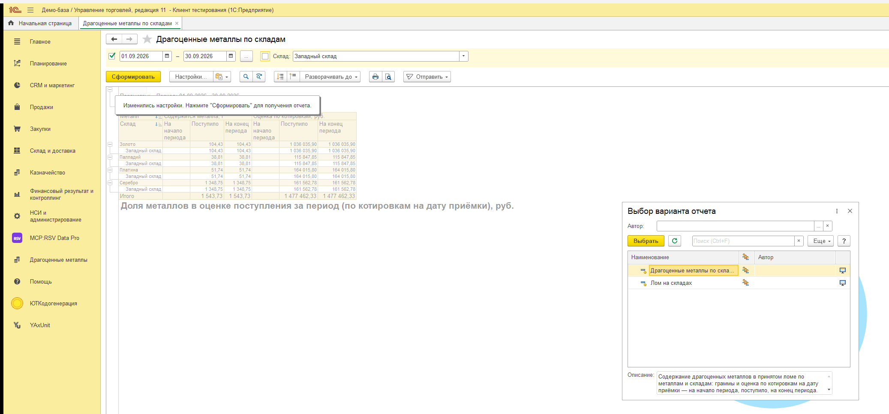
Отчёт размещён в панели «Отчёты по закупкам» раздела «Закупки» — вместе с типовыми отчётами, с описанием каждого варианта, — и в группе «Отчёты» собственного раздела.
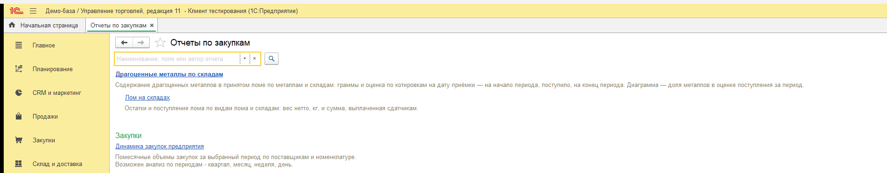
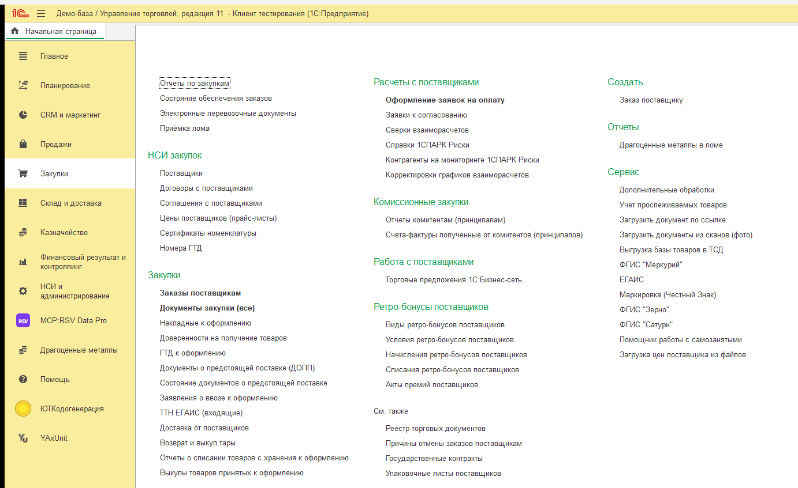
Внешняя обработка «Монитор приёмки лома»
Отдельный файл внешней обработки. Слева — документы приёмки с отбором по периоду и складу, значками состояния и цветом непроведённых; справа — металлы выделенного документа со значками. Ширина делится по содержимому: правая таблица показывает все колонки без прокрутки.
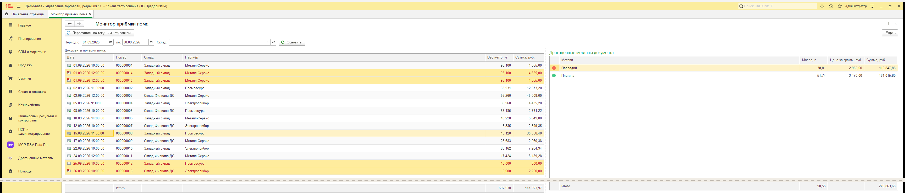
Кнопка «Пересчитать по текущим котировкам» в фоне считает, сколько стоили бы металлы всех отобранных документов по сегодняшним котировкам; документы не меняются. Окно программы не замирает, ход виден, выполнение можно прервать.
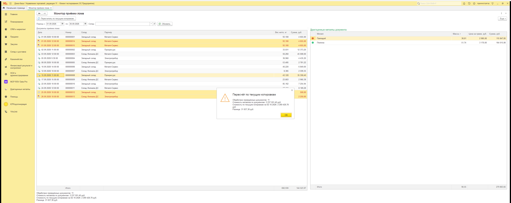
Монитор подключён к базе как дополнительная обработка и привязан к разделу «Драгоценные металлы»: пользователь открывает его из группы «Дополнительные обработки» раздела, а не ищет файл на диске. Подключает его команда администратора в разделе; файл обработки хранится внутри расширения. Открытый из раздела, монитор работает так же, как открытый файлом, — с отбором, кнопками и фоновым пересчётом.
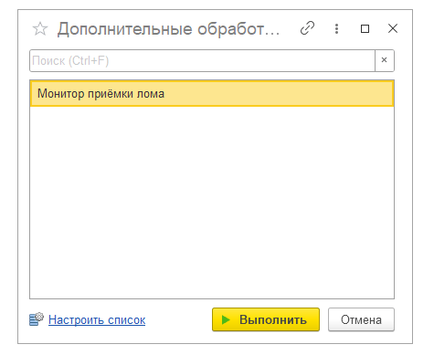
Закладка «Приём лома» в карточке партнёра
Типовая карточка партнёра заимствована, типовая форма не изменена. Новая закладка: флажок «Сдатчик лома», номер лицензии на обращение с ломом и дата окончания (доступны при установленном флажке), таблица последних приёмок от партнёра — заполняется сразу при открытии и служит только для просмотра; двойной щелчок открывает документ. Признак и лицензия сохраняются и видны при повторном открытии.
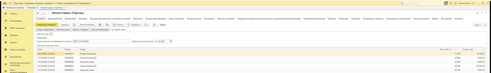
Роли и права
Права настраивались сразу при создании каждого объекта: своя роль «Учет драгоценных металлов» и заимствованная «Полные права» — справочник, документ (с проведением и отменой проведения), регистры, отчёт, команды, раздел и все его группы. Служебный регистр сдатчиков не показывается пользователю отдельной командой — с ним работает только закладка карточки партнёра.
Удалить металл или документ насовсем нельзя ни при каких правах, включая полные: в меню «Еще» карточки и списка пункта «Удалить» нет, «Пометить на удаление» есть и работает. Проверено снимком раскрытого меню во всех четырёх местах — карточка и список металла, карточка и список документа.
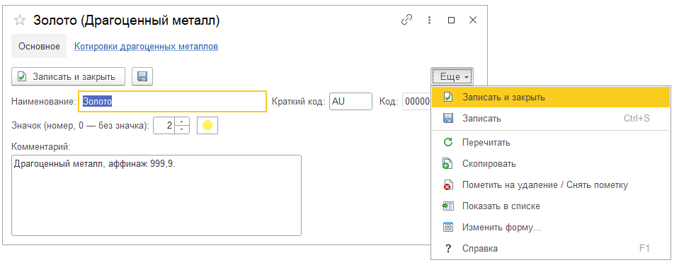
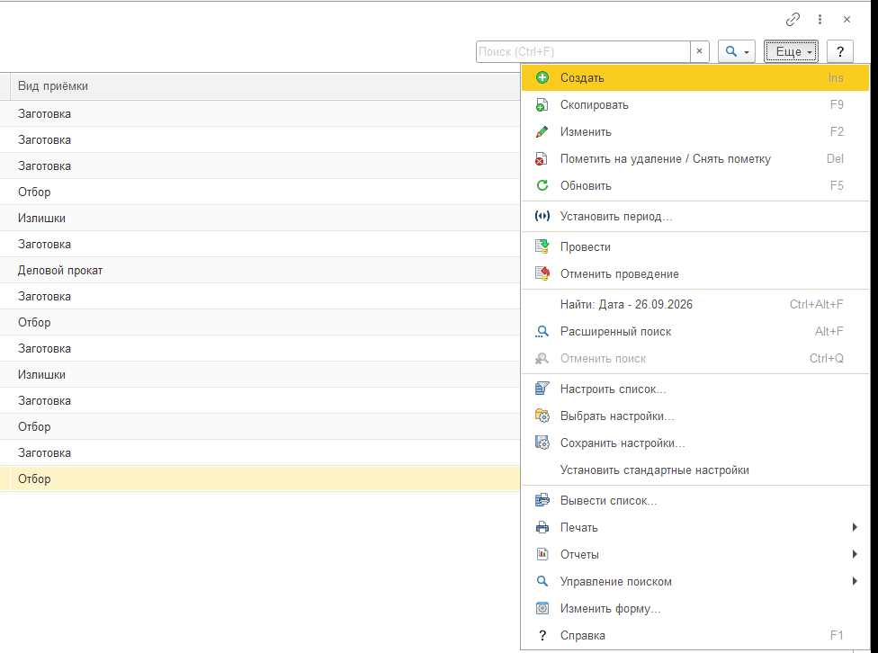
Что агент нашёл и исправил сам
В каждой части агент находил недочёты сам — по снимкам экрана, тестам и сверке данных, — исправлял их и проверял заново до сдачи части. Примеры:
- Раздел не появлялся в панели разделов. Объекты открывались, а самого раздела не было. Агент нашёл причину — у ролей расширения не было права на просмотр раздела и его групп — и выдал права.
- Пользователь с одной ролью не смог бы провести документ. На итоговой проверке прав агент увидел, что роли не хватает права изменять регистры накопления: тесты шли под полными правами, и пробел не проявлялся. Право добавлено.
- Форма документа. Комментарий растягивался на всю высоту формы; картинка закладки рисовалась полосой; «Пометить на удаление» оказывалась только в меню «Еще» — добавлена кнопка на панели с типовым обработчиком конфигурации.
- Список документов. Две командные панели вместо одной и нет значков состояния — исправлено.
- Акт. Сумма к выплате печаталась с обозначением «RUB» — заменено на «руб.».
- Отчёт. В шапке выводилась служебная строка отбора «Металл заполнено» — убрана, итоги не изменились.
- Монитор. Строки непроведённых документов выходили чёрными; колонка значка металла показывала число вместо картинки — исправлено.
- Карточка партнёра. У таблицы последних приёмок не было видно заголовка — добавлен.
- Формы записи котировок и содержания. Заголовок окна обрезался — форма расширена.
- Картинка раздела. Первая подобранная картинка совпадала с картинкой раздела «Казначейство» — агент перебрал картинки конфигурации, сравнил на снимках и выбрал весы.
Всего по снимкам исполнители поймали и исправили около 15 недочётов оформления. Код-ревью и проверка проекта средой — ошибок нет, оставшиеся предупреждения объяснены поимённо.
Как проверено
| Чем | Что подтверждено |
|---|---|
| YAxUnit, 16 тестов | вес нетто с отбрасыванием лишних знаков, суммы, расчёт металлов по примеру задания (100 кг брутто, 5 кг мусора, засор 2 % → 93,100 кг; платы компьютерные → золото 23,28 г, серебро 102,41 г), проведение и отмена проведения по обоим регистрам, отказ проведения без содержания металлов, состав печатных форм (в акте нет металлов), последние приёмки партнёра. Ожидаемые значения — из задания, посчитаны вручную |
| Vanessa, 7 сценариев | формы открываются, кнопки нажимаются и дают результат: расчёт строки, «Рассчитать металлы», проведение, переход по сообщению к строке, меню «Печать» и «Отчёты», выбор вариантов отчёта, монитор из раздела с пересчётом, сохранение реквизитов сдатчика. Итоговый сценарий — ≈ 160 шагов за один запуск программы |
| Снимки экрана | по каждой форме и каждому меню «Еще»; каждый кадр агент открывал и описывал, что на нём видно |
| MCP:RSV Data Pro | оба варианта отчёта сформированы в работающей программе и сверены с прямым запросом к документам — весь сентябрь, период с ненулевым остатком на начало, отбор по складу: совпало до грамма и до копейки (за сентябрь 2 497,07 г / 2 237 591,40 руб.). Пересчёт монитора сверен с запросом: 2 237 591,40 → 2 269 428,78 руб. |
| Независимая проверка после прогона | отдельный сценарий по готовой базе (79 шагов, 13 кадров) и запросы за период 10–20.09, который агент не брал: документ № 8, акт, оценка партии, монитор, оба варианта отчёта пересчитаны вручную и запросом — совпало до грамма и до копейки |
Что осталось
Четыре мелких остатка агент назвал в итоговом отчёте сам:
- в списке партнёров нет колонки-флажка «Сдатчик лома» (в карточке партнёра признак — флажком);
- монитор подключается командой администратора в разделе, а не сам при установке расширения — задание допускает оба способа;
- окно хода фонового пересчёта не попало на снимок: на 11 документах пересчёт заканчивается раньше, чем окно успевает появиться;
- в расширении осталась одна неиспользуемая картинка.
Статистика прогона
Время по видам работ и по частям задания, объём объектов и кода, сколько раз запускалась программа, оценка уровня задачи и трудоёмкости для опытного программиста без ИИ-помощника — на отдельной странице.
Скачать комплект
УчетДрагметаллов.cfe; внешняя обработка ДрМ_МониторПриемкиЛома.epf;
README — что внутри, как подключить к демо-базе и как повторить разработку.
Версии: «Управление торговлей» 11.5 (демонстрационная база), платформа 1С:Предприятие 8.3.27, 1C:EDT 2026.2, модель Claude Opus 5.5.
Расширение и обработка — результат работы ИИ-агента по этому заданию, а не готовое прикладное решение. Подключайте их только к копии демонстрационной или тестовой базы.
Как попробовать самому: подключите расширение к копии демо-базы «Управление торговлей» 11.5 и посмотрите результат, или дайте своему агенту с MCP:RSV Server задание вместе со скиллом и правилами из архива. Начать — с установки плагина (14 дней бесплатно) и руководства пользователя.